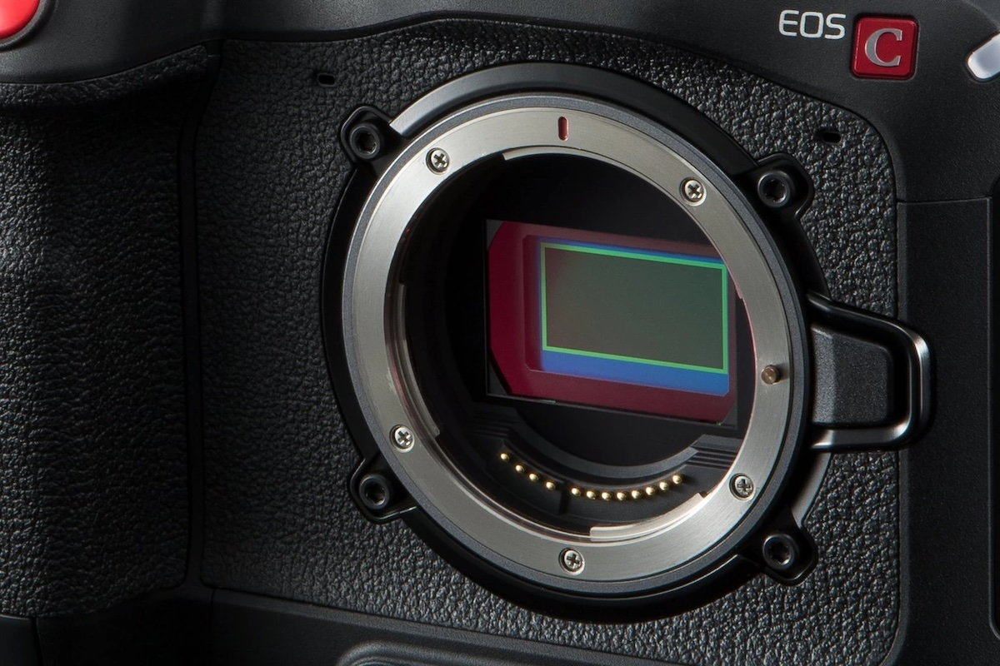

Fotoğraf Makinesinde Sensör Nedir ve Nasıl Çalışır?
Fotoğrafçılıkla ilgilenen herkes, kameranın en temel bileşenlerinden biri olan “sensör” terimini mutlaka duymuştur. Dijital fotoğraf makinelerinin en önemli parçası olan sensör, aslında dijital dünyada fotoğrafın “gözüdür.” Bu yazıda, sensörün ne olduğunu, nasıl çalıştığını ve farklı sensör türlerinin fotoğraflar üzerindeki etkilerini ele alacağız.
Sensör Nedir?
Sensör, bir dijital fotoğraf makinesinde film yerine geçen, ışığı elektrik sinyallerine çeviren bileşendir. Görüntülerin dijital ortama aktarılmasını sağlayan bu yapı, fotoğrafın kalitesini, çözünürlüğünü ve dinamik aralığını doğrudan etkiler. Sensörün ana görevi, objektiften gelen ışığı toplamak ve her bir pikseldeki ışık yoğunluğunu belirleyerek dijital bir görüntü oluşturmaktır.
Sensör Nasıl Çalışır?
- Işığın Algılanması: Fotoğraf çekme süreci, ışığın objektif üzerinden sensöre ulaşmasıyla başlar. Objektiften gelen ışık, sensörün yüzeyindeki milyonlarca küçük piksel (ışığa duyarlı hücreler) tarafından algılanır. Bu pikseller, farklı renk ve yoğunluktaki ışığı yakalayarak görüntünün temelini oluşturur.
- Analog Sinyalin Oluşumu: Sensör, ışığı elektrik sinyaline çevirir. Bu elektrik sinyalleri, her bir pikselin maruz kaldığı ışık miktarına göre analog bir değer taşır. Sensörler, bu analog sinyalleri fotoğrafın rengini ve parlaklığını belirleyecek dijital değerlere dönüştürmek için dönüştürücüler kullanır.
- ADC (Analog-Digital Converter) ile Dijital Dönüşüm: Analog sinyaller, bir ADC (Analog-Digital Converter) yardımıyla dijital değerlere dönüştürülür. Bu süreç, görüntünün piksel değerlerinin dijital veriler halinde saklanmasını sağlar. Dijital fotoğraf makinenizin kalite ayarlarına bağlı olarak, bu dijital veriler daha yüksek veya daha düşük çözünürlükte olabilir.
Farklı Sensör Türleri
Dijital fotoğraf makinelerinde birkaç farklı sensör türü bulunur ve her biri farklı özelliklere sahiptir:
- CCD Sensörler: CCD (Charge-Coupled Device) sensörler, analog sinyalleri daha yüksek doğrulukla dijitale çevirir ve genellikle daha pahalı kameralarda tercih edilir. CCD sensörler, görüntü kalitesi açısından üst düzey performans sunmalarına rağmen enerji tüketimleri yüksektir.
- CMOS Sensörler: Günümüzde en yaygın olarak kullanılan CMOS (Complementary Metal-Oxide Semiconductor) sensörlerdir. CMOS sensörler, enerji verimliliği yüksek olup daha hızlı veri aktarımı sağlar. Ayrıca, üretim maliyeti düşük olduğu için daha geniş bir yelpazede kullanılır.
- Full Frame ve Crop Sensörler: Sensör boyutları da kaliteyi etkileyen önemli bir faktördür. Full frame sensörler, 35 mm film boyutunda olup daha geniş bir dinamik aralık ve daha iyi bir düşük ışık performansı sağlar. Crop sensörler ise daha küçük boyutlu olup daha kompakt makinelerde bulunur.
Sensör Boyutunun ve Kalitesinin Fotoğrafa Etkisi
Sensör boyutu, özellikle düşük ışık performansı ve alan derinliği üzerinde büyük bir etkiye sahiptir. Daha büyük sensörler, daha fazla ışık topladığından düşük ışıklı ortamlarda daha başarılı sonuçlar verir. Ayrıca, yüksek çözünürlükte çekimler yapmak için daha büyük sensörlere ihtiyaç vardır.
Daha küçük sensörlü kameralar ise kompakt yapıları sayesinde taşınabilirlik açısından avantaj sağlar. Ancak, düşük ışıkta performanslarının sınırlı olması ve daha az alan derinliği sağlamaları gibi dezavantajları vardır.
Sensörün Bakımı ve Temizliği
Birçok fotoğrafçı için sensör temizliği göz ardı edilse de, toz ve kirin zamanla sensör üzerinde birikmesi görüntü kalitesini doğrudan etkileyebilir. Sensör temizliği, düzenli aralıklarla yapılmalı ve özel temizleme araçları kullanılmalıdır. Özellikle DSLR veya aynasız makinelerde lens değiştirirken içeri toz girmesini önlemek için dikkat edilmelidir.
Sonuç
Fotoğraf makinesindeki sensör, dijital görüntünün temelini oluşturan en önemli bileşenlerden biridir. Sensör kalitesi, boyutu ve türü, çektiğiniz fotoğrafın sonucunu belirler. İyi bir sensör, yüksek çözünürlüklü, canlı ve net fotoğraflar sunarken; uygun sensör bakımı da kameranızın performansını uzun süre korumanıza yardımcı olur. Fotoğrafçılıkla ilgileniyorsanız, sensörlerin nasıl çalıştığını ve doğru seçimlerin çekim kalitesine nasıl katkıda bulunduğunu anlamak önemlidir.